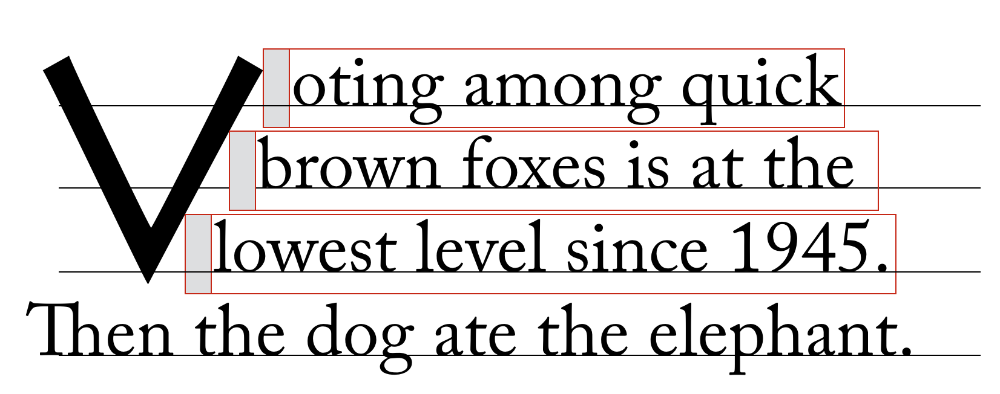
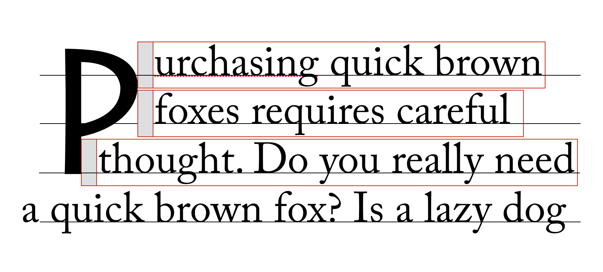
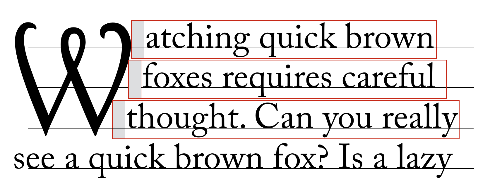

To the extent possible under law, the editors have waived all copyright
and related or neighboring rights to this work.
In addition, as of 24 July 2015,
the editors have made this specification available under the
Open Web Foundation Agreement Version 1.0,
which is available at http://www.openwebfoundation.org/legal/the-owf-1-0-agreements/owfa-1-0.
Parts of this work may be from another specification document. If so, those parts are instead covered by the license of that specification document.
Abstract
The CSS formatting model provides for a flow of elements and text inside of a container to be wrapped into lines. The formatting of elements and text within a line, its positioning in the inline progression direction, and the breaking of lines are described in [CSS3TEXT]. This module describes the positioning in the block progression direction both of elements and text within lines and of the lines themselves. This positioning is often relative to a baseline. It also describes special features for formatting of first lines and drop caps. It extends on the model in [CSS2].
::first-letter pseudo-elements and inline-level first child of a block container
Inherited:
no
Percentages:
N/A
Media:
visual
Computed value:
as specified
Animatable:
no
none
No wrapping is performed.
auto
For each line of text impacted by the initial letter, the line box adjacent to the intial letter starts at the left-most point that touches the ink of the initial letter, plus a fixed amount of offset.
How much offset? Based on the right side-bearing of the initial letter? That could be a problem as it’s sometimes negative (see Zapfino).
first-line
As auto, but wrapping only performed on the first line of the block containing the initial letter.
Rewrite for logical directions.
Bikeshed value names.
Do we need anything else for scripts where this behavior is undesirable? Or is default "none" sufficient?
Note: If the next character after the initial letter is a whitespace character, auto and first-line compute to none, in order to avoid the initial letter appearing to be part of the subsequent word.
Only first line is moved up against the ink of the initial letter.



What should happen with initial letters that are concave on the (right) side? Wrapping the middle line in a three-line initial "K" can look very strange.
Conformance
Conformance requirements are expressed with a combination of descriptive assertions and RFC 2119 terminology.
The key words “MUST”, “MUST NOT”, “REQUIRED”, “SHALL”, “SHALL NOT”, “SHOULD”, “SHOULD NOT”, “RECOMMENDED”, “MAY”, and “OPTIONAL”
in the normative parts of this document
are to be interpreted as described in RFC 2119.
However, for readability,
these words do not appear in all uppercase letters in this specification.
All of the text of this specification is normative
except sections explicitly marked as non-normative, examples, and notes. [RFC2119]
Examples in this specification are introduced with the words “for example”
or are set apart from the normative text with class="example", like this:
This is an example of an informative example.
Informative notes begin with the word “Note”
and are set apart from the normative text with class="note", like this:
Do we need anything else for scripts where this behavior is undesirable? Or is default "none" sufficient? ↵
What should happen with initial letters that are concave on the (right) side? Wrapping the middle line in a three-line initial "K" can look very strange. ↵